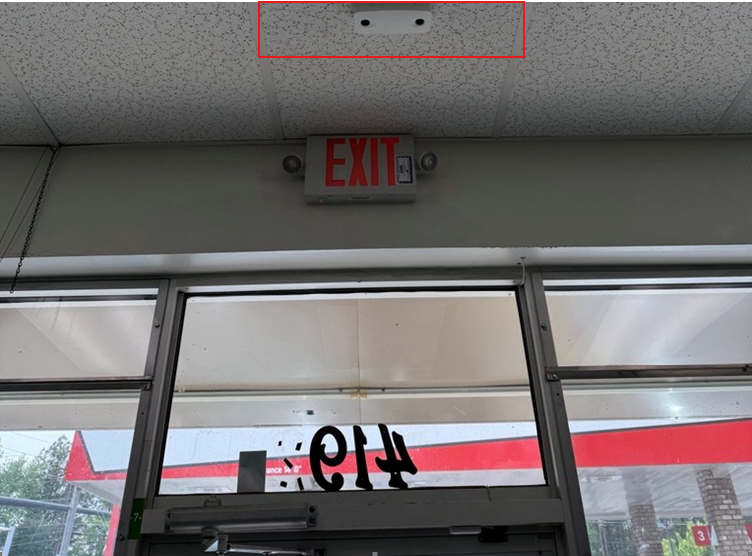
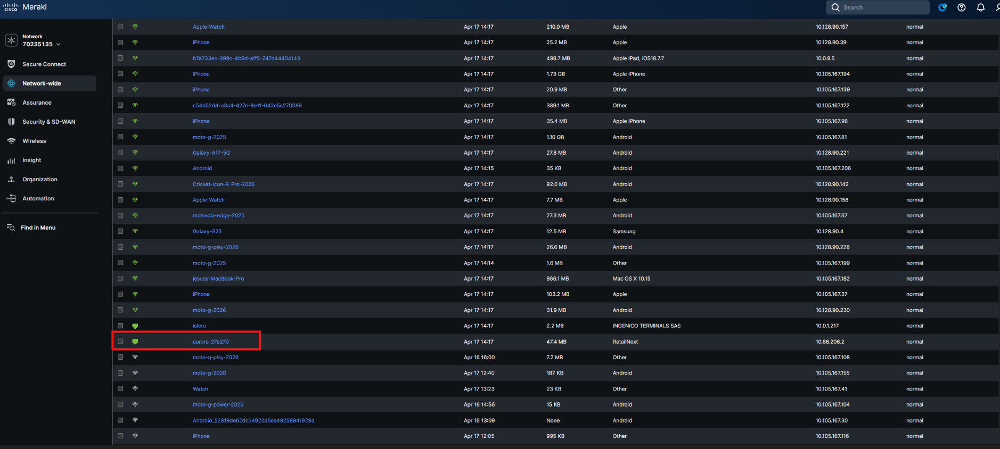

    <!--<meta charset="UTF-8">
    //<meta name="viewport" content="width=device-width, initial-scale=1.0">-->
    <!--<title>Single Line Account Bypass</title>-->
   <link rel="stylesheet" href="styles.css">


    <section class="section1">
        <div id="imageModal" class="expand">
            <span class="close" onclick="closeImage()">&times;</span>
            
        </div>


        <div class="smallContainer">
                <h2 style="font-weight: bold; text-align: center;">ROS: Traffic Counters </h2>   

                <p><strong style="text-align: left; color: red;">Important:</strong> Before any networking guidance, please ask the AR if a traffic counter was recently installed
                at this location.</p>

                <p style="margin-bottom: 20px !important">Traffic Counters will be installed in select authorized retailer locations to
                 track the number of customers entering and exiting the store. This typically helps understand foot traffic in stores 
                 and better assist with staffing and inventory management.</p>   

                


                <h3 style="color: rgb(96, 166, 48); font-weight: bold;">Store Setup: </h3>
                <ul>- Traffic counters will be mounted on the ceiling approximately 3 feet from the entrance.</ul>
                <ul></ul>

                <ul>- Traffic Counters will be hard-wired through the ceiling and connected into port 11 of the Meraki MX68, <b>it MUST remain connected to port 11.</b></ul>
                <ul>- It is important to instruct ARs to <b>NOT</b> remove or move device connection from port 11.</ul>

                <h3 style="color: rgb(96, 166, 48); font-weight: bold;">Important Network Considerations: </h3>
                <ul>- Traffic counters requires <b>PoE power.</b> (Power over Etherent) which enables a single ethernet cable to carry data and electrical power to devices.</ul>
                <ul>- The only ports which provide PoE on the MX68 is <b>ports 11 and 12.</b></ul>
                <ul>- <b>Port 11</b> will be the designated and only available PoE port for traffic counters.</ul>
                <ul>- <b>Port 12</b> is reserved for the MR28 access point.</ul>
                <ul>If another device was previously connected to port 11, installers will relocate the device to port 10 or another open port between 2-10.</ul>

                <h3 style="color: rgb(96, 166, 48); font-weight: bold;">Meraki Dashboard:</h3>
                <div id="dashboard">

                <ul>Traffic counters will appear as an <b>Aurora Device</b> in the Meraki Dashboard</ul>
                <ul>Please make note of this when assisting stores with network-related issues.</ul>
                <ul></ul>

                </div>
                

        </div>

        <!--<p style="text-align: left;">At this moment, traffic counters will be installed in select authorized retailer locations.</p>-->

        <!--<div class="theContainer">
            <div class="smallContainer">
                <h2 style="color: rgb(96, 166, 48); font-weight: bold;">Single Line Account Bypass: </h2>
                <p style="margin-bottom: 20px !important">Authorized Retailers will now be able to manage account bypass requests in store.</p>
                <ul style="margin-bottom: 10px !important;"><strong>Requirements to begin Account Bypass Request: </strong></ul>
                <ul>• Single Line Accounts Only</ul>
                <ul>• Customer cannot remember PIN / SQA</ul>
                <ul>• Customer's device is not working and unable to receive pin reset link</ul>
                <ul>• Customer has government issued photo ID</ul>
                <ul>• ID matches customer and name on the account</ul>

                <h2 style="color: rgb(96, 166, 48); font-weight: bold;">How will ARs submit account bypass requests in Aktivate: </h2>
                <button type="button" id="BAUbutton" onclick="openPopUp()">Open BAU Account Bypass Validation</button>

                <div class="imgcontainers">
                    <div class="img-item">
                        <p style="width: 400px;">1. Once advocate has validated the customer in the store with an accepted form of ID, and has verified name on the ID matches the name on the account. There will be an option to click Account Bypass to begin request in Aktivate. <i>See reference picture below</i></p>
                        
                    </div>

                    <div class="img-item">
                        <p style="width: 400px;">2. A prompt will appear to input the status of the customer's device. Whether the device is <b>Lost</b>, <b>Stolen</b>, or <b>Broken</b>. Once advocate has selected the appropriate status, they must click the checkmark below to attest the information is correct. <i>See reference picture below</i></p>
                        
                    </div>
                </div>

                <div class="imgcontainers">
                    <div class="img-item">
                        <p style="width: 400px;">3. Retail advocate will continue by submitting account bypass request. <i>See reference picture below</i></p>
                        
                    </div>

                    <div class="img-item">
                        <p style="width: 400px;">4. The advocate will see the pending request awaiting approval or denial. <i>See reference picture below</i></p>
                        
                    </div>
                </div>

                <h2 style="color: rgb(96, 166, 48); font-weight: bold;">Final Step: </h2>
                <p>Account Bypass Request will be seen in ABO for approval. <i>See reference picture below</i></p>
                
            </div>
        </div>

        <div class="importantContainer">
            <h2 style="color: rgb(224, 59, 37); font-weight: bold; text-align: left;">Important Notes: </h2>
            <h4 style="text-decoration: underline;">Only 2 Bypasses Per Month, Per Store:</h4>
            <p>Authorized Retailers will only be allowed to manage 2 account bypass requests a month. <b>Not per customer, per store.</b></p>
            <p>If an Authorized Retailer exceeds this limit, a manager override will be required by a District Manager or Higher.</p>
            <p>An AR will encounter a notification in Aktivate if they have exceeded this limit.</p>

            <h4 style="text-decoration: underline;">RHD Assistance:</h4>
            <p>The RHD will continue to assist in account bypass requests as needed, but the RHD will need to inform the advocate of this new self-serve account bypass feature in Aktivate.</p>
            <p>In the near future, the RHD will no longer need to assist with account bypass requests as the self-serve feature will handle them.</p>
        </div>

        <div id="popup" class="links" style="display: none;">
            <div class="thepop">
                <button id="closeExceed" class="closeExceedStyle" onclick="closeExceedLinks()"></button>
                <b style="text-align: center;">Retail Escalation Process</b>
                <p>1. Customer enters retail location.</p>
                <p>2. Advocate is unable to access account because customer has a one-line account, cannot recall PIN/SQA and device is broken/lost/stolen and cannot receive One-Time PIN (OTP) reset</p>
                <p>3. Advocate validates customer with photo ID</p>
                <ul>● Acceptable forms of Government ID: Driver's License, U.S. Passport, U.S. Government ID, State ID, U.S. Military ID, Alien Registration Receipt card with photo (INS form I-151 or U-551), Employment Authorization Document with photo (INS form I-688B)</ul>
                <ul>● Name on ID must match name on account</ul>
                <ul>● Photo must be customer in store</ul>
                <ul>● If YES, proceed to next step</ul>
                <ul>● If NO, advise customer that we cannot authenticate the account</ul>
                <p>4. Retail advocate chooses the ID Validation option</p>
                <ul>● Selects the ID Type provided by the customer</ul>
                <ul>● Enters the Expiration Date from the ID</ul>
                <ul>● Clicks “Submit”</ul>
            </div>
        </div>-->

        <br><br>

        <button class="btn1" type="button" id="copyUrlBtn" onclick="copyUrl()">Copy Exceed Link</button>
    </section>

    <script>
        
function openPopUp() {
    const popup = document.getElementById('popup');
    const popContent = document.querySelector('.thepop');

    popup.style.display = '';
    popContent.style.display = '';
}

function closeExceedLinks() {
    const popup = document.getElementById('popup');
    const popContent = document.querySelector('.thepop');

    popup.style.display = 'none';
    popContent.style.display = 'none';
}

function expandImage(img) {
    const expand = document.getElementById('imageModal');
    const expandedImg = document.getElementById('expandedImg');

    expand.style.display = 'flex';
    expandedImg.src = img.src;
    expandedImg.alt = img.alt;
}

function closeImage() {
    const expand = document.getElementById('imageModal');
    expand.style.display = 'none';
}

window.onclick = function(event) {
    const expand = document.getElementById('imageModal');
    if (event.target === expand) {
        closeImage();
    }
}

function showDashboard() {
    const dashboard = document.getElementById('dashboard');
    if (dashboard.style.display === 'none') {
        dashboard.style.display = '';
    } else {
        dashboard.style.display = 'none';
    }
}

function copyUrl() {
    const url = window.location.href;
    navigator.clipboard.writeText(url).then(() => {
        const btn = document.getElementById('copyUrlBtn');
        const originalText = btn.textContent;
        btn.textContent = 'Copied!';
        btn.style.backgroundColor = '#4CAF50';

        setTimeout(() => {
            btn.textContent = originalText;
            btn.style.backgroundColor = '';
        }, 2000);
    }).catch(err => {
        console.error('Failed to copy URL: ', err);
        alert('Failed to copy URL');
    });
}
    </script>


